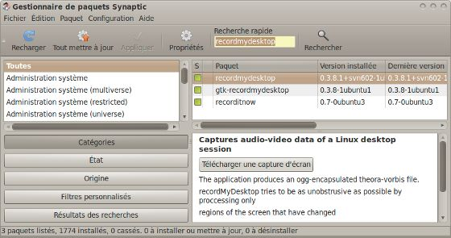

Je me présente, je m'appelle Alexis et je suis l'administrateur d'un blog qui propose des vidéos gratuites et formateur chez un autre site assez connu qui vend des tutoriels vidéos. Aujourd'hui je vais vous parler d'un domaine que je connais bien : les tutoriels vidéos, aussi appelés formations vidéos ou Screencast (habituez-vous à ce terme que je risque d'employer souvent). Il existe déjà un tutoriel qui explique la démarche à suivre sur Windows, en utilisant le logiciel Camstudio. Dans ce tutoriel, on va plutôt s'intéresser au Screencast sur Linux (Ubuntu pour être précis).
Avant de commencer d'entrer dans le vif du sujet, j'aimerais définir plus exactement le terme de Screencast mais, aussi expliquer mon choix vis à vis du logiciel que l'on va utiliser.
D'après wikipédia un screencast (ou capture vidéo) est un enregistrement vidéo d'un écran d'ordinateur souvent accompagné d'une narration audio. En Français, on préfère parler de "tutoriel vidéo", ce qui est beaucoup plus parlant.
Pour faire un Screencast, on utilise un logiciel. (oui, c'est utile de le préciser, j'ai déjà vu des vidéos filmé au caméscope :lol: ). Sur Linux, en matière de logiciel pour enregistrer son écran, on n'est pas très gâté. En effet la plupart des logiciels qui existent datent d'au moins 2 ans et ils ne sont plus mis à jour très souvent (parfois le projet est abandonné :colere2: ).
Néanmoins, il existe 4 logiciels qui sont « potables », ce sont : Istanbul, XvidCap, Wink (voir le tuto de pipic) et RecordMyDesktop.
Après les avoir tous testé, le meilleur reste RecordMyDesktop (que j'abrège en RMD) et c'est sur ce logiciel qu'on va s'attarder aujourd'hui.
Dans tout le tutoriel je serais sur une distribution Ubuntu (version 10.04, la plus récente à l'heure où j'écris ce tutoriel). Je vais détailler 3 méthodes d'installations possibles afin d'être le plus précis possible. Malheureusement, je ne connais pas d'autres distribution Linux, donc si vous n'êtes pas sur Ubuntu vous serez obligé de vous débrouiller.
Lisez une des 3 méthodes puis sautez au chapitre suivant :) .
Première méthode : en utilisant la logithèque
C'est probablement la méthode la plus simple, pour cela il suffit d'aller dans le menu application, tout en bas, de cliquer sur logithèque et de rechercher le logiciel « RecordMyDesktop ».
Si tout se passe bien, vous devriez avoir plusieurs résultats mais, il faut cocher et installer : gtk-RecordMyDesktop et recordmydesktop. (RecordItNow n'est pas nécessaire contrairement à la capture d'écran) Il suffit de cocher les cases et de lancer l'installation. Votre mot de passe vous sera demandé ce qui est normal sur Ubuntu.
Pourquoi faut-il installer 2 paquets ?
À la base RMD est un logiciel qui s'utilise en mode console, ce qui peut être pratique dans certain cas mais, pour une utilisation basique ça complique les choses. C'est pour cela que les développeurs ont créé gtk-RecordMyDesktop qui ajoute une interface graphique au logiciel pour une utilisation plus simple :D .
Seconde méthode : en passant par le gestionnaire de paquets Synaptic
Si vous n'arrivez pas installer RMD en utilisant la première méthode, voici une alternative légèrement plus compliquée.
On va utiliser le gestionnaire de paquet Synaptic qui se trouve dans Système/Administrations/Gestionnaires de paquets Synaptic. Normalement, un mot de passe vous est demandé.
Ensuite, vous devez rechercher "RecordMyDesktop" dans la barre de recherche en haut du logiciel et cocher les 2 premiers paquets c'est-à-dire "RecordMyDesktop" et "gtk-RecordMyDesktop". Voici une capture d'écran pour vous aider :

Enfin n'oubliez pas de valider et terminer l'installation !
Dernière méthode : avec la console
Une dernière méthode pour la route :lol: cette fois-ci on va utiliser le terminal qui est disponible dans Applications/Accessoires/Terminal. Lorsque vous avez accès au terminal, vous tapez cette ligne :
Découvrons les principales fonctionnalités de RecordMyDesktop :
Fenêtre principale :
Lorsque vous avez fini d'installer le logiciel, il se place automatiquement dans la catégorie « son et vidéo » du menu Applications.
Lorsque vous lancez le logiciel vous devriez avoir une fenêtre comme ça :
J'ai numéroté les différentes parties intéressantes pour expliquer plus facilement. Donc dans l'ordre :
Ce que vous voyez dans la zone 1 correspond à une miniature de votre écran. On peut s'en servir pour délimiter la zone de l'écran que l'on désire enregistrer. Pour ce faire, avec la souris faites un rectangle directement dans cette zone et des bordures rouges apparaîtront autour de la zone à filmer. L'inconvénient c'est que ce n'est pas très précis. Heureusement qu'il existe une autre méthode que nous allons voir un peu plus loin (3).
Cette deuxième zone vous donne accès à des options de configuration rapides. Comme son nom l'indique, vous pouvez changer la qualité vidéo et la qualité sonore. Vous pouvez même désactiver le son en décochant la case en face de « qualité sonore ». Vous remarquez la présence d'un gros bouton « avancé » qui nous permet de configurer le logiciel avec plus d'options, mais nous verrons ça plus loin.
La troisième zone « Sélectionner une fenêtre » nous donne accès à un outil qui nous permet d'enregistrer seulement ce qui se passe sur une fenêtre. C'est très pratique et beaucoup plus précis que de faire une sélection approximative dans la miniature qui se situe au-dessus. Lorsque vous sélectionnerez une fenêtre, un cadre rouge apparaîtra dans la miniature, vous indiquant ce que vous filmez.
Le bouton numéro 4 nous permet de commencer l'enregistrement.
Et enfin le bouton 5 nous permet de modifier le répertoire et le nom du fichier qui va être crée à la fin de votre screencast. Par défaut, RMD crée un fichier « out.ogv » dans votre dossier personnel.
Barre des tâches
Lorsque vous lancez RMD, la fenêtre principale apparait et c'est probablement la plus visible mais, il y a aussi un petit logo qui apparait dans la barre des tâches et il est pratique. En effet, il peut servir de raccourci pour lancer l'enregistrement, le mettre en pause et l'arrêter.
Voici à quoi ressemble le logo de RecordMyDesktop lorsqu'on ne fait rien de spécial, c'est-à-dire lorsque le logiciel est simplement lancé :
Maintenant, lorsqu'on fait un premier clic gauche de la souris sur cette boule rouge, le logo change et on commence l'enregistrement :
Maintenant en faisant un clic droit on peut mettre en pause l'enregistrement (pratique pour faire sauter les temps de chargement !) et un autre clic droit et l'enregistrement reprend :
Pour arrêter l'enregistrement, il suffit de faire un clic gauche lorsque le logo est en forme de carré, il redeviendra sous forme de boule rouge et une nouvelle apparaitra :
Configuration avancée de RecordMyDesktop
Vous pouvez configurer davantage le logiciel en allant dans l'onglet Avancé, qui ouvrira une nouvelle fenêtre. Cette nouvelle fenêtre contient plusieurs onglets que nous allons voir au cas par cas.
Fichier
L'onglet fichier n'est pas très intéressant. À la rigueur vous pouvez changer de répertoire de travail si votre répertoire /tmp est sur un disque avec peu de mémoire ou si vous avez une configuration bien particulière.
Performance
L'onglet performance en revanche est beaucoup plus utile !
Par défaut le nombre d'images par secondes n'est pas assez élevé pour avoir une vidéo vraiment fluide (de mémoire c'était 15 fps). Personnellement je le monte a 24 images par secondes pour avoir une vidéo très fluide, la contrepartie c'est que le poids et la durée de l'encodage augmente aussi.
Encoder à la volée est une option pratique aussi. Par défaut, lorsqu'on veut faire une vidéo, on lance l'enregistrement, on fait ce qu'on a à faire et on coupe l'enregistrement. À partir de là, le logiciel récupère les fichiers temporaires et les traite : il encode la vidéo. Cette partie est très longue (surtout depuis la mise à jour du codec theora). Si vous activez "encoder à la volée", le logiciel va encoder votre vidéo en même temps que vous faites votre enregistrement. Résultat : pas de temps d'attente à la fin :D !
Compression nulle permet d'activer ou non la compression des fichiers temporaires. Si vous compressez ces fichiers, ils prendront moins de place mais l'encodage sera plus long et inversement.
En activant le sous échantillonnage rapide l'encodage se fera plus rapidement mais, la qualité de la vidéo sera moins bonne (couleurs plus troubles).
L'option de capture complète permet d'avoir une vidéo de meilleure qualité. C'est particulièrement utile lorsque vous faites des démonstrations avec des environnements de bureaux en 3D dans le genre de Compiz-Fusion. Bien évidemment il y a une contrepartie : le temps d'encodage et le poids de la vidéo :(
Son
Les paramètres de son sont utiles même si par défaut les réglages fonctionnent très bien. C'est en cas de problème qu'il faut aller bidouiller cet onglet !
Vous pouvez définir le nombre de canaux audios et pour être franc je ne vois pas à quoi ça sert … sans doute pour avoir le son de l'ordinateur (bruit d'ubuntu) en plus du micro mais, je n'affirme rien.
L'onglet fréquence doit être modifiée si vous avez un décalage son/vidéo important. Si vous avez un décalage, vous pouvez essayer de mettre la fréquence à 48000.
De même pour l'onglet périphérique. Si vous n'avez pas de son dans vos vidéos mais, que la case son est bien coché sur le logiciel, ça peut venir de la. Si vous avez des problèmes, vous pouvez essayer de remplacer DEFAULT par hw:1,0. De même si le son est de mauvaise qualité, vous pouvez remplacer par : plughw:0,0.
Divers
Le dernier onglet propose quelques options sympas comme par exemple le fait de pouvoir changer la forme du curseur de la souris à l'aide du menu déroulant. Vous pouvez même décider d'enlever le curseur ;)
Suivre la souris va de pair avec la zone de capture. Je m'explique, par défaut lorsqu'on définie une zone de capture, celle-ci ne bouge pas et reste fixe sur l'écran. En cochant zone la case « suivre la souris », la souris va être centrée dans la zone de capture et cette zone se déplacera en même temps que la souris.
L'extension MIT-Shm est un paramètre important du logiciel qu'il ne faut pas désactiver. Pour faire simple, c'est une extension qui optimise la mémoire afin que le logiciel soit fluide.
Astuces permet d'afficher des infobulles d'aide dans RMD lorsque vous survoler une option. Je me sers de ces astuces pour faire ce tutoriel :).
Vous pouvez décider d'encadrer la zone de capture à l'écran. C'est pratique pour savoir exactement ou s'arrête l'enregistrement donc je vous conseille de cocher cette case même s'il y a un petit risque qu'il se forme un cadre noir autour de votre vidéos finale.
Et enfin la dernière case permet de réinitialiser la zone de capture à chaque fois que vous fermez votre logiciel.
Étant l'auteur d'un blog qui propose des formations vidéos gratuites depuis un peu plus d'un an (à l'heure où j'écris ce tutoriel), j'ai accumulé un peu d'expérience que je souhaiterais partager avec vous sous forme de conseils. Avec un peu de chance vous éviterez de faire les mêmes erreurs que moi et vous gagnerez un temps précieux.
Préparez votre tutoriel avant de vous filmer !
Avant de faire un tutoriel vidéo il faut complètement maitriser son sujet, anticiper les erreurs et ne pas dire de bêtise. Pour cela, vous devez faire des recherches sur internet en trouvant plusieurs sources et en les comparant.
Ensuite vous devez faire un plan, comme ci c'était un tutoriel écrit afin d'éviter de vous éparpiller en vidéo.
Si vous voulez faire des vidéos sur le développement web par exemple, il faut toujours tester ses scripts avant de faire une vidéo et repérer où vous allez faire des erreurs pour en parler. En effet certaines personnes feront certainement ces mêmes erreurs donc il faut essayer d'anticiper et en parler.
Essayez de faire des vidéos d'une durée moyenne ou courte. Par exemple, évitez de dépasser 1 heure de vidéo, car très peu de personnes regarderont jusqu'au bout à moins que vous soyez un excellent orateur. Ne faites pas l'erreur de décrire ce que vous faites, les gens le voient bien, ils ne sont pas aveugle. Vous devez l'expliquer et c'est la qu'est toute la difficulté. Éviter les répétitions qui peuvent être lourdes en vidéo, vous devez aller à l'essentiel d'où l'intérêt du plan.
Préparez vos bureaux
Lorsque vous faites un tutoriel, essayez de rester le plus neutre possible. Adieu les fonds d'écrans et thèmes personnalisés. Faites le ménage sur votre bureau pour éviter d'avoir 50 icônes qui ne servent à rien.
Dans le même ordre d'idée, essayez de lancer le moins de logiciels possibles en tâche de fond. La fenêtre de conversation msn qui débarque en plein milieu d'un tuto ce n'est pas très pro ;)
L'idéal c'est de créer une session "spéciale tuto" qui restera vierge :)
N'oubliez pas de préparer votre bureau de la vie réelle aussi. Ce que je veux dire par là, c'est que vous devez être au calme. Exit les petites sœurs qui crient en arrière plan ou la télé à fond !
Faites des tests avec RecordMyDesktop avant de vous enregistrer
Avant d'enregistrer une vidéo, faites toujours un test avec RecordMyDesktop. Lancez le logiciel pendant une trentaine de seconde, parler dans le micro et faites bouger votre souris.
Hé pourquoi je m'amuserais à faire des vidéos de 30 secondes qui ne servent à rien ?
Tout simplement parce que RMD restaure les configurations par défaut à chaque lancement. Ainsi en testant pendant une trentaine de secondes vous n'aurez pas de mauvaise surprise comme le son de désactivé. (je ne vous raconte pas la joie d'avoir fait une vidéo de 1h30 et qu'on s'aperçoit qui manque le son ! (oui, ça sent le vécu :-° ))
Diminuez votre résolution d'écran
Garder en tête que vos visiteurs vont probablement regarder votre vidéos sur une plateforme comme Youtube ou Dailymotion, dans un lecteur qui fait une taille d'environs 560x350 px. Même si l'option pleine écran existe, peu de personnes l'utilisent réellement. Vous devez diminuer votre résolution d'écran afin d'augmenter la lisibilité de vos vidéos. Plutôt que de faire un exposé de 15 lignes sur cette idée, on va faire une expérience, vous allez très vite comprendre. Prenez une capture d'écran en 1680*1050 d'un texte tiré du site du zéro. Réduisons cette image au format Youtube, disons 560*360 px. Faisons la même chose mais, avec une image qui fait 1280*800 dès le départ. Observez le résultat :
Capture et rétrécissement de l'image faisant 1680x1050 au départ
Capture et rétrécissement de l'image faisant 1280*800
On remarque tout de suite que l'image qui était plus petite au départ est plus lisible car le facteur de réduction est moins important. Résultat, le texte est légèrement plus lisible.
En plus d'améliorer la lisibilité du texte, votre ordinateur vous remerciera aussi ! En effet, c'est beaucoup moins long d'encoder une vidéo de 10 minutes qui fait 1280*800 que celle qui fait 1680*1050. Il en va de même pour la taille de la vidéo et cette fois-ci vous gagnerez un temps précieux, car la phase d'upload est longue … très longue !
En revanche, c'est vrai qu'en plein écran la vidéo avec la résolution la plus grande est mieux. Mais honnêtement, une résolution de 1280*800 correspond à de la HD 720p :D . Vous pouvez prendre des résolutions moins élevées, la lisibilité du texte n'en sera que plus grande, mais vous perdrez certainement l'encodage en HD sur les différents sites d'hébergement de vidéos. Personnellement je fais toutes mes vidéos en 1280*800, ce qui représente un bon compromis entre qualité et lisibilité (ça me permet d'avoir l'encodage HD de dailymotion, mais j'en reparlerais plus loin).
Ré-encoder votre vidéo
Lorsque vous avez fini votre vidéo avec RecordMyDesktop, vous aurez un fichier qui portera l'extension .ogv et qui sera encodé à l'aide du codec libre « theora ». C'est plutôt une bonne chose, sauf que les hébergeurs de vidéos n'aiment pas trop ce format et risque de poser des problèmes. De mêmes si vous proposez vos vidéos en téléchargements vos lecteurs risque d'avoir des soucis.
Vous pouvez ré-encoder la vidéo avec le codec Xvid pour la vidéo et Mp3 pour le son, pour obtenir un fichier .avi grâce à Mencoder et cette petite ligne de commande sous linux :
Ça y est, vous avez enfin terminé votre vidéo mais, maintenant vous voulez la diffuser sur internet. Oui mais comment ? Vous devez l'envoyer sur un site qui diffuse vos vidéos gratuitement. Il en existe plusieurs, mais voici le top 3 que j'ai retenu (ce sont les plus connu).
En premier je choisis Dailymotion. En effet contrairement à Youtube vos vidéos ne sont pas limitées en temps et au niveau de la taille vous aurez de la marge. Pour pouvoir bénéficier de ces avantages, il faut avoir le statut de "Motion Maker". Rassurez-vous, en proposant un petit tutoriel, bien conçu et sans musique payante, vous obtiendrez ce statut sans trop de problèmes !
Deuxième choix : vimeo. C'est sans doute l'un des moins connu, mais il propose un service de qualité. Il y a une offre payante et une offre gratuite. Avec l'offre gratuite vous pouvez uploader 500 Mo de vidéo par semaine et vous êtes limité à une vidéo encodée en HD par semaine. Le truc, c'est que chez moi, je peux envoyer plein de vidéos et elles auront quand même la HD et parfois leurs systèmes pour calculer les 500 Mo plante ce qui vous laisse un peu de marge. Je vous souhaites d'avoir autant de chance que moi :lol: .
Dernier choix : Youtube. Pourquoi en dernier ? Parce que les vidéos sont limitées à 15 minutes, ce qui est problématique. D'autant plus que les utilisateurs du FAI orange ont des problèmes de débit. En revanche, le trafic de youtube est bien plus important et vous n'aurez pas de soucis avec la HD qu'il gère très bien et les limitations du poids des vidéos sont larges. Vous pouvez faire sauter la limitation de temps avec Youtube en demandant d'être partenaire mais croyez-moi, vous n'êtes pas près de l'avoir … A moins d'avoir une vidéo qui buzz et un trafic important, ils refuseront votre demande.
Une vidéo c'est bien, avec du texte c'est mieux !
Enfin dernier conseil, n'oubliez pas de faire un petit résumé avec du texte de votre vidéo. En effets, les tutoriels vidéos sont idéals pour les débutants car, ils permettent de les rassurer, de leur montrer que c'est facile mais ça ne remplace pas le texte !
Les tutoriels vidéos présentent aussi des inconvénients. Le principal étant qu'on impose son rythme à celui qui regarde la vidéo. C'est pour cela qu'il faut trouver un juste milieu et faire des vidéos d'une durée moyenne. Il ne faut pas aller trop vite mais, il ne faut pas rester trop longtemps sur des détails trop simples.
Pour une question d'accessibilité (ou même de référencement !), faites des résumés avec du texte en dessous de vos vidéos. Vos visiteurs apprécieront et si un jour votre vidéo ne fonctionne pas, ils pourront lire le texte. De plus c'est également très pratique, si on ne se souvient pas d'un élément de la vidéo, au lieu de la relire, on jette un œil sur le texte (plus rapide) et on voit tout de suite ce que c'est !
Le tutoriel est enfin terminé, j'espère qu'il vous aura plu et que mon expérience vous aura servi ! Néanmoins, si vous avez des questions vous pouvez toujours passer par le forum.

{kind=link}
{kind=link}